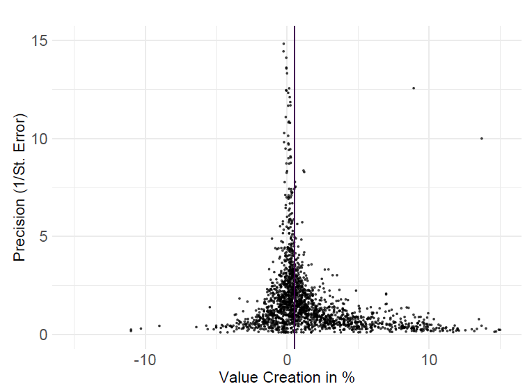

Abstract
We conduct a meta-analysis of 1,973 estimates of stock price responses to shareholder activism reported in 67 primary studies. We document publication bias in the literature. Corrected activism effects range from 0% to 1.5%. Effects are stronger when shareholder rights are better protected and when stock markets are smaller. Markets respond more positively to activism by individual investors, confrontational activism, and activism aimed at company sale. Estimates based on longer periods, simpler risk-adjustment approaches, more recent and longer datasets, as well as those published in more reputable journals tend to be larger.
Fig: Selective reporting against negative estimates (indicated by funnel asymmetry)
Reference: Bajzik Josef, Havranek Tomas, Irsova Zuzana, Jiri Novak (2025), "Does Shareholder Activism Create Value? A Meta-Analysis." Corporate Governance: An International Review 33(5): 1039-1061.